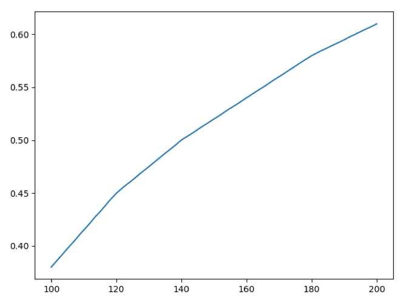

Random NLH Strats with T9s
In this post I look at the starting hand of T♠9♠, analyzing typical post flop strategies with references from a few poker literatures.
Pre-Flop
Here are the pre-flop equity of T♠9♠ against some of the common open-raise hand types, calculated by Equilab and rounded to the nearest 5%:
- Random: 54%
- PokerStrategy Standard Open-Raise: UTG MP CO BU: 33% 39% 42% 45%
- Connectors One/Two Gappers: 57%
- Random Pairs: 39% (TT+: 20%)
Note that facing pre-flop open-raise from most positions, T♠9♠ has fairly decent equities in the pot to call. It is not ideal to 3-bet with T♠9♠ as it is much more playable after the flop and will almost certainly folds to any 4-bets. Also, when facing 3-bets, the equity drops below 30% and we should fold most of the time.
Post-Flop In-Position
Most of the game setting analyzed below is no-limit hold’em, 6 max table and 50 BB+. We hold a starting hand of T♠9♠.
Facing Donk Bet
Suppose that we open raise at UTG and SB calls. The flop is rainbow K♣7♠6♦. The SB donk bet (betting out-of-position after the flop against pre-flop aggressor) half pots.
- If we have seen the SB slow-play strong hands and lead with mid-pair before. At this point we should raise, as the SB’s range is fairly wide. If SB calls, we should not raise on the turn unless we hit our outs.
- If the SB is a TAG player, he is usually protecting his weak hands such as mid-low pairs.
- TAG will mostly check-call and rarely donk bet with strong hands on the flop, as it looks too suspicious for the other player to commit.
Floating
Suppose TAG opens UTG and we called in position. The flop is A♠8♥3♥. UTG c-bets full pot and we float call. We now a have back-door straight and flush draw and the flop has two ♥. We must correctly fire multiple streets if we decided to float.
Turn & River:
- If the turn is J/7 we can check-call with 8 more outs
- If the turn is T/9 we can check-call if UTG often raise with wider ranges.
- If the turn is a heart and and UTG checks, we should bet here and will likely win the pot. If UTG check-calls, we can consider betting again at non-♥ river as most Ax/set/single clubs would fold at the river.
Now suppose that with the same pre-flop situation as above, the flop is K♠5♥3♦. UTG c-bets full pot and we float call. The turn is 8♣, UTG bets full pots again.
At this point we should fold. At the turn we have lost most of our outs (Q/J/T/9 of Spades). The flop and turn are too dry for us to have fold equities when bluffing.
Bluff Raise In Multi-Way Pot
Suppose MP raised, CO called and we called from the BTN. The flop is ♦J♠8♥6. MP c-bets, CO calls.
At this point we should raise with back-door flush/straight draws, and often force MP/CO to folds Js.
- If only MP calls, we should bet only if we pick up flush/striaght draws at the turn.
- If only CO calls, we should almost never bet unless we hit flush/straight at the river.
Our perception that CO’s call range is slightly stronger than MP, because he had called twice (from MP and from us).
- On a wet board such as flush draws, however, we should not bluff raise it will induce MP/CO to all-in our bluff raise with a wider range.
- It is not ideal to check-all-in at this point, if CO had 3-bet pre-flop and MP had called his 3-bet. Although we are signaling a strong range of sets/two pairs, our opponent will have a very hard time folding over-pairs. because
people are more than willing to pay for their mistakes with overpairs rather than folding it.
Raising The Turn
Suppose that UTG opens and we called from late positions. The flop is rainbow K♦9♥4♣. UTG bets full pot and we call. The turn is 3♣, UTG checks.
At this point we should raise, because the UTG’s range has weaken at the turn. A stronger hands with sets or two pairs would have raise at the turn to extract values off any single pairs that I have.
Semi-Bluffing The Turn
Suppose we open raise on the BTN, a TAG player on BB 3-bets and we call. The flop is a rainbow ♣K♥8♦7, and TAG bets pot-size 20BB and we called. The turn is a ♠Q, and TAG bets 2/3 pot 40BB. Now the pot is 100BB.
At this point, although we only have 8 outs (J/6) most of the time, we can all-in due to fold equity, give that the TAG has been firing on the first two streets quite frequently.
Let us calculate the lowest fold rate from our opponent for this play to be 0-EV. Suppose our opponent holds top set QQ, where our current equity 16%, and both of us have BB at inception.
1 | import matplotlib.pyplot as plt |
Here are conservative estimates of the minimum break-even fold rates required for this all-in to be a positive EV play. Note that from 100 to 200BB, the rate grows almost linearly from 30% to 50%.

Now suppose both of us start with 150BB and we estimated the calling and folding range of our opponents be:
- Calling: AA, KK, QQ, 88, 77, AK, KQ, 87 = 6 + 3 x 4 + 12 + 9 x 2 = 48
- Folding: AQ, KJ, T9, 65 = 12 x 2 + 9 + 16 = 49
Therefore our opponent’s fold rate would be 49/(48 + 49) = 50% which means the all-in play has positive EV with starting stack less than 200BB.
Post-Flop Out-Of-Position
Back-Door Flush Draw
Suppose TAG opens at BTN and we called on BB. The flop is ♠8♠7♥3. We check and TAG c-bets full pot.
At this point we should check-raise 100% of the times with our high-card and straight/flush draws. However, if the flop is ♠K♠8♥3, we should check-call more often as our fold equity drops with the presence of a King.
Check-Raising The Turn
Suppose open and hit a straight at the flop ♥8♣7♦6. We c-bet on the flop and the turn is a ♠Q.
At this point we should check-raise instead of raise. Because our opponent is unlikely to float at this flop, he would bet the turn himself if he can call a bet.
If checks back at the turn with single pairs, we should always bet the river. Note although this looks awfully like a value bet (check turn bet river), our opponent are very likely to call given he called the flop check-raise.
Check-Raising The River
Suppose we check-call a pot-size bet on the flop ♥Q♣9♣3. The turn is ♥T and both of we check. The river is a ♠K.
At this point we should check-raise. Becuase our flop check-call & turn check range includes mid-pairs and missed flush/straigh draws, which both induce bluff from our opponents, as well as increase our earnings from our opponent’s K/J pairs.
Reference:
- The Poker Blueprint: Advanced Strategies for Crushing Micro and Small Stakes NL, Davis & Nguyen
- Easy Game: Making Sense of No Limit Hold’em, Seidman, Colletta & Cesaro